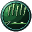

Techniques
Wood
Fire
Earth
Metal
Water
Wind
Thunder
Soul
Formless
Space
Time
Lost Arts
Secret Arts
Act I · the valley
3 of 20 found
Act II · the Expanse
1 of 12 found
Act III · the Lantern Field
0 of 12 found
All20
Steles4
Ruins7
Masters3
Rare drops5
Quests0
Events1
Acts I–III: 4 of 62 found
2 learned · 2 to read
tap a scrap to read it
2 learned · 2 to read
tap a scrap to read it
Rising Tide
Rare drop
Unread
Stele
Behind falling water
Lotus Mind
Master
Learned
Ruin
A well never drained
Rare drop
Torn copies in the gorge
Stele
A carved stone on a peak
Rain of Reeds
Rare drop

Unread
Ruin
Old abbey on the peak
Master
Drifting Cloud
Cloud Sect
Rare drop
The smuggler's vault
Stele
A stone worn to a blade
Ruin
Deep in the quarry
Master
The marsh hermit
Ruin
A grotto facing the moon
Stele
Warm stone in the mist
Ruin
Above your own vale
Ruin
The ridge shrine, in winter
Rare drop
The serpent of the bend
Ruin
One note at the cliffs
Event
When the shrine rises
The Ferryman’s Oar
Lu’s lost school, in his journal:
pages 3 of 30, an art every 5
pages 3 of 30, an art every 5
3 / 5
10
15
20
25
30
Stele rubbing · Act I · the Jade River Valley
A lost Secret Art of Water
Its name is on the stele · sure, once per character
What is known
“A stele behind falling water remembers a step the water cannot follow.”
✓ Behind the Falls, Crane Falls.
You have walked Crane Falls
A Spirit Sense pulse behind the falls, or a companion’s tip, shows the rest
Needs a Rubbing Kit · none held
Stoneford General Store
Stoneford General Store
Track
Ask Lan Yue
Ring I · the Sunsteel Jian's bar
Ring II · the 1/2 swap
Heavy arts
0 of 2, one a ring
0 of 2, one a ring
Inner Arts · Lotus Mind known
Jian stance
None known;
see Wood
see Wood